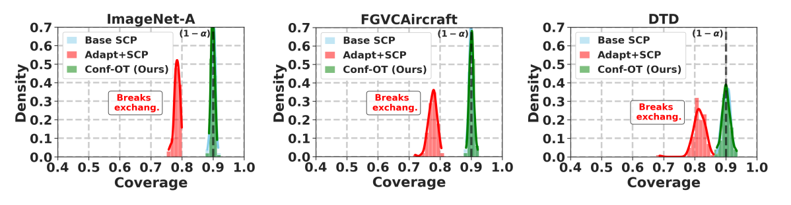
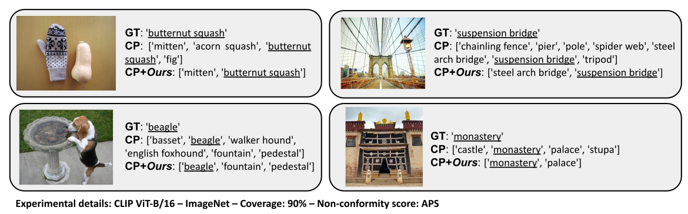

Conformal Prediction for Zero-Shot Models
Julio Silva-Rodríguez · Ismail Ben Ayed · Jose Dolz - ÉTS Montréal.
CVPR'25 - Paper - Code

Highlights
- Large-sclae vision-language models (VLMs) are strong zero-shot learners. However, its reliability remains scarcely explored.
- Conformal prediction is a machine learning framework that provides user-specified coverage guarantees, by building predictive sets, i.e., few candidate labels per image. For example, in split conformal prediction, the outputs can be conformalized using a small labeled claibration set, to ensure that the correct label is within the predicted sets 90% of the times.
- In this work, we introduce split conformal prediction for transferring zero-shot VLMs.
- Since there exist a domain gap between pre-training and the target task the zero-shot predictions might be suboptimal. We propose Conf-OT, a transductive pipeline to enhance the produced conformal sets yet maintaining the coverage guarantees.
Challenges of conformal prediction for zero-shot models.
Let us assume that we have access to a unique, small calibration set labeled, and we want to prepare the pre-trained VLM
to provide predictive sets to ensure a 90% coverage on the true label upon the standard split conformal prediction.
However, we also want to improve the zero-shot performance of the VLM, since the target task presents severe domain
drifts w.r.t. the target domain. One appealing option would be to fistly adapt the produced logits, e.g., by adjusting an
efficient linear probe, and then conformalize the outputs based on the same calib supervision. We coin such naive solution
as Adapt+SCP. However, such pipeline would break the exchangeability assumption between calib/test, and the coverage would not
be satisfied (see below, red).

Above, we show the coverage distribution for multiple random experiments of the aforementioned pipeline, showing an
average level of coverage below the desired threshold for Adapt+SCP.
This observation motivates the following question: can the performance of VLMs in conformal settings be improved via
transfer learning without additional data sources beyond the calibration set?
Conf-OT: an unsupervised transductive transfer learning.
To address the domain shift when transferring VLMs in the split conformal prediction setting,
we explore novel transfer learning strategies to ensure a smooth adaptation that safewards the exchangeability of calib/test scores distribution.
For that porpuse, we propose a black-box adaptation strategy from the zero-shot similarity matrix (logits) that is:
Transductive: calibration and test scores are jointly transferred.
Unsupervised: does not explicitly rely on label-supervised sample-wise optimization objectives.
Our method, Conf-OT: given the joint calib/test zero-shot similarity matrix, we leverage well-established knowledge on Optimal Transport
to produce a code assignment that respect the desired properties of the target distribution. For example, in split conformal prediction, we can
access the label-marginal distribution from calib labels, which must be the same both in calib/test upon exchangeability premises. Once the new codes are obtained, any non-conformity
score can bew used to produce the conformal sets. As shown in the figure above (green), Conf-OT maintains
the marginal coverage properties satisfied to the desired level.

Our method improves set efficiency and conditional coverage.
Generally, the desired predictive sets should be as small as possible, i.e., efficient, but also they should adapt to
more uncertain cases by integrating larger predictive sets and hence ensure the desired marginal coverage.
The latter, so-called adaptiveness property, can be typically measured by the subgroup (class-wise) coverage gap.
The proposed Conf-OT transductive pipeline provides consistent improvements of nearly 20% on set efficiency and 10% on
adaptiveness for several large-scale VLMs.

Above, we show some qualitative examples of the predicted sets. One can notice that conformal prediction enables
quantifying uncertainties related to potential label biases (e.g. there are multiple objected in the image in top-left or bottom-left), and
uncertainties due to semantic similarities of visual concepts (e.g. monastery/palace in bottom-right).
Citation
Please cite our paper if it is helpful to your work:
@inproceedings{confot,
title={Conformal Prediction for Zero-Shot Models},
author={Julio Silva-Rodr\'iguez and Ismail {Ben Ayed} and Jose Dolz},
booktitle={IEEE/CVF Conference on Computer Vision and Pattern Recognition (CVPR)},
year={2025}
}Contact
Please feel free to contact us: julio-jose.silva-rodriguez@etsmtl.ca.